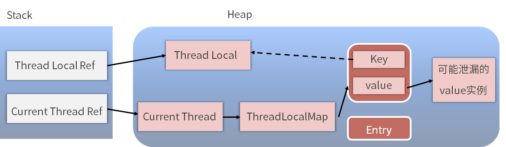

- 00 由点及面，搭建你的 Java 并发知识网.md.html
- 01 为何说只有 1 种实现线程的方法？.md.html
- 02 如何正确停止线程？为什么 volatile 标记位的停止方法是错误的？.md.html
- 03 线程是如何在 6 种状态之间转换的？.md.html
- 04 waitnotifynotifyAll 方法的使用注意事项？.md.html
- 05 有哪几种实现生产者消费者模式的方法？.md.html
- 06 一共有哪 3 类线程安全问题？.md.html
- 07 哪些场景需要额外注意线程安全问题？.md.html
- 08 为什么多线程会带来性能问题？.md.html
- 09 使用线程池比手动创建线程好在哪里？.md.html
- 10 线程池的各个参数的含义？.md.html
- 11 线程池有哪 4 种拒绝策略？.md.html
- 12 有哪 6 种常见的线程池？什么是 Java8 的 ForkJoinPool？.md.html
- 13 线程池常用的阻塞队列有哪些？.md.html
- 14 为什么不应该自动创建线程池？.md.html
- 15 合适的线程数量是多少？CPU 核心数和线程数的关系？.md.html
- 16 如何根据实际需要，定制自己的线程池？.md.html
- 17 如何正确关闭线程池？shutdown 和 shutdownNow 的区别？.md.html
- 18 线程池实现“线程复用”的原理？.md.html
- 19 你知道哪几种锁？分别有什么特点？.md.html
- 20 悲观锁和乐观锁的本质是什么？.md.html
- 21 如何看到 synchronized 背后的“monitor 锁”？.md.html
- 22 synchronized 和 Lock 孰优孰劣，如何选择？.md.html
- 23 Lock 有哪几个常用方法？分别有什么用？.md.html
- 24 讲一讲公平锁和非公平锁，为什么要“非公平”？.md.html
- 25 读写锁 ReadWriteLock 获取锁有哪些规则？.md.html
- 26 读锁应该插队吗？什么是读写锁的升降级？.md.html
- 27 什么是自旋锁？自旋的好处和后果是什么呢？.md.html
- 28 JVM 对锁进行了哪些优化？.md.html
- 29 HashMap 为什么是线程不安全的？.md.html
- 30 ConcurrentHashMap 在 Java7 和 8 有何不同？.md.html
- 31 为什么 Map 桶中超过 8 个才转为红黑树？.md.html
- 32 同样是线程安全，ConcurrentHashMap 和 Hashtable 的区别.md.html
- 33 CopyOnWriteArrayList 有什么特点？.md.html
- 34 什么是阻塞队列？.md.html
- 35 阻塞队列包含哪些常用的方法？add、offer、put 等方法的区别？.md.html
- 36 有哪几种常见的阻塞队列？.md.html
- 37 阻塞和非阻塞队列的并发安全原理是什么？.md.html
- 38 如何选择适合自己的阻塞队列？.md.html
- 39 原子类是如何利用 CAS 保证线程安全的？.md.html
- 40 AtomicInteger 在高并发下性能不好，如何解决？为什么？.md.html
- 41 原子类和 volatile 有什么异同？.md.html
- 42 AtomicInteger 和 synchronized 的异同点？.md.html
- 43 Java 8 中 Adder 和 Accumulator 有什么区别？.md.html
- 44 ThreadLocal 适合用在哪些实际生产的场景中？.md.html
- 45 ThreadLocal 是用来解决共享资源的多线程访问的问题吗？.md.html
- 46 多个 ThreadLocal 在 Thread 中的 threadlocals 里是怎么存储的？.md.html
- 47 内存泄漏——为何每次用完 ThreadLocal 都要调用 remove()？.md.html
- 48 Callable 和 Runnable 的不同？.md.html
- 49 Future 的主要功能是什么？.md.html
- 50 使用 Future 有哪些注意点？Future 产生新的线程了吗？.md.html
- 51 如何利用 CompletableFuture 实现“旅游平台”问题？.md.html
- 52 信号量能被 FixedThreadPool 替代吗？.md.html
- 53 CountDownLatch 是如何安排线程执行顺序的？.md.html
- 54 CyclicBarrier 和 CountdownLatch 有什么异同？.md.html
- 55 Condition、object.wait() 和 notify() 的关系？.md.html
- 56 讲一讲什么是 Java 内存模型？.md.html
- 57 什么是指令重排序？为什么要重排序？.md.html
- 58 Java 中的原子操作有哪些注意事项？.md.html
- 59 什么是“内存可见性”问题？.md.html
- 60 主内存和工作内存的关系？.md.html
- 61 什么是 happens-before 规则？.md.html
- 62 volatile 的作用是什么？与 synchronized 有什么异同？.md.html
- 63 单例模式的双重检查锁模式为什么必须加 volatile？.md.html
- 64 你知道什么是 CAS 吗？.md.html
- 65 CAS 和乐观锁的关系，什么时候会用到 CAS？.md.html
- 66 CAS 有什么缺点？.md.html
- 67 如何写一个必然死锁的例子？.md.html
- 68 发生死锁必须满足哪 4 个条件？.md.html
- 69 如何用命令行和代码定位死锁？.md.html
- 70 有哪些解决死锁问题的策略？.md.html
- 71 讲一讲经典的哲学家就餐问题.md.html
- 72 final 的三种用法是什么？.md.html
- 73 为什么加了 final 却依然无法拥有“不变性”？.md.html
- 74 为什么 String 被设计为是不可变的？.md.html
- 75 为什么需要 AQS？AQS 的作用和重要性是什么？.md.html
- 76 AQS 的内部原理是什么样的？.md.html
- 77 AQS 在 CountDownLatch 等类中的应用原理是什么？.md.html
- 78 一份独家的 Java 并发工具图谱.md.html
47 内存泄漏——为何每次用完 ThreadLocal 都要调用 remove()？
在本课时我们主要讲解为什么用完 ThreadLocal 之后都要求调用 remove 方法？
首先，我们要知道这个事情和内存泄漏有关，所以就让我们先来看一下什么是内存泄漏。
什么是内存泄漏
内存泄漏指的是，当某一个对象不再有用的时候，占用的内存却不能被回收，这就叫作内存泄漏。
因为通常情况下，如果一个对象不再有用，那么我们的垃圾回收器 GC，就应该把这部分内存给清理掉。这样的话，就可以让这部分内存后续重新分配到其他的地方去使用；否则，如果对象没有用，但一直不能被回收，这样的垃圾对象如果积累的越来越多，则会导致我们可用的内存越来越少，最后发生内存不够用的 OOM 错误。
下面我们来分析一下，在 ThreadLocal 中这样的内存泄漏是如何发生的。
Key 的泄漏
在上一讲中，我们分析了 ThreadLocal 的内部结构，知道了每一个 Thread 都有一个 ThreadLocal.ThreadLocalMap 这样的类型变量，该变量的名字叫作 threadLocals。线程在访问了 ThreadLocal 之后，都会在它的 ThreadLocalMap 里面的 Entry 中去维护该 ThreadLocal 变量与具体实例的映射。
我们可能会在业务代码中执行了 ThreadLocal instance = null 操作，想清理掉这个 ThreadLocal 实例，但是假设我们在 ThreadLocalMap 的 Entry 中强引用了 ThreadLocal 实例，那么，虽然在业务代码中把 ThreadLocal 实例置为了 null，但是在 Thread 类中依然有这个引用链的存在。
GC 在垃圾回收的时候会进行可达性分析，它会发现这个 ThreadLocal 对象依然是可达的，所以对于这个 ThreadLocal 对象不会进行垃圾回收，这样的话就造成了内存泄漏的情况。
JDK 开发者考虑到了这一点，所以 ThreadLocalMap 中的 Entry 继承了 WeakReference 弱引用，代码如下所示：
static class Entry extends WeakReference<ThreadLocal<?>> {
/** The value associated with this ThreadLocal. */
Object value;
Entry(ThreadLocal<?> k, Object v) {
super(k);
value = v;
}
}
可以看到，这个 Entry 是 extends WeakReference。弱引用的特点是，如果这个对象只被弱引用关联，而没有任何强引用关联，那么这个对象就可以被回收，所以弱引用不会阻止 GC。因此，这个弱引用的机制就避免了 ThreadLocal 的内存泄露问题。
这就是为什么 Entry 的 key 要使用弱引用的原因。
Value 的泄漏
可是，如果我们继续研究的话会发现，虽然 ThreadLocalMap 的每个 Entry 都是一个对 key 的弱引用，但是这个 Entry 包含了一个对 value 的强引用，还是刚才那段代码：
static class Entry extends WeakReference<ThreadLocal<?>> {
/** The value associated with this ThreadLocal. */
Object value;
Entry(ThreadLocal<?> k, Object v) {
super(k);
value = v;
}
}
可以看到，value = v 这行代码就代表了强引用的发生。
正常情况下，当线程终止，key 所对应的 value 是可以被正常垃圾回收的，因为没有任何强引用存在了。但是有时线程的生命周期是很长的，如果线程迟迟不会终止，那么可能 ThreadLocal 以及它所对应的 value 早就不再有用了。在这种情况下，我们应该保证它们都能够被正常的回收。
为了更好地分析这个问题，我们用下面这张图来看一下具体的引用链路（实线代表强引用，虚线代表弱引用）：

可以看到，左侧是引用栈，栈里面有一个 ThreadLocal 的引用和一个线程的引用，右侧是我们的堆，在堆中是对象的实例。
我们重点看一下下面这条链路：Thread Ref → Current Thread → ThreadLocalMap → Entry → Value → 可能泄漏的value实例。
这条链路是随着线程的存在而一直存在的，如果线程执行耗时任务而不停止，那么当垃圾回收进行可达性分析的时候，这个 Value 就是可达的，所以不会被回收。但是与此同时可能我们已经完成了业务逻辑处理，不再需要这个 Value 了，此时也就发生了内存泄漏问题。
JDK 同样也考虑到了这个问题，在执行 ThreadLocal 的 set、remove、rehash 等方法时，它都会扫描 key 为 null 的 Entry，如果发现某个 Entry 的 key 为 null，则代表它所对应的 value 也没有作用了，所以它就会把对应的 value 置为 null，这样，value 对象就可以被正常回收了。
但是假设 ThreadLocal 已经不被使用了，那么实际上 set、remove、rehash 方法也不会被调用，与此同时，如果这个线程又一直存活、不终止的话，那么刚才的那个调用链就一直存在，也就导致了 value 的内存泄漏。
如何避免内存泄露
分析完这个问题之后，该如何解决呢？解决方法就是我们本课时的标题：调用 ThreadLocal 的 remove 方法。调用这个方法就可以删除对应的 value 对象，可以避免内存泄漏。
我们来看一下 remove 方法的源码：
public void remove() {
ThreadLocalMap m = getMap(Thread.currentThread());
if (m != null)
m.remove(this);
}
可以看出，它是先获取到 ThreadLocalMap 这个引用的，并且调用了它的 remove 方法。这里的 remove 方法可以把 key 所对应的 value 给清理掉，这样一来，value 就可以被 GC 回收了。
所以，在使用完了 ThreadLocal 之后，我们应该手动去调用它的 remove 方法，目的是防止内存泄漏的发生。